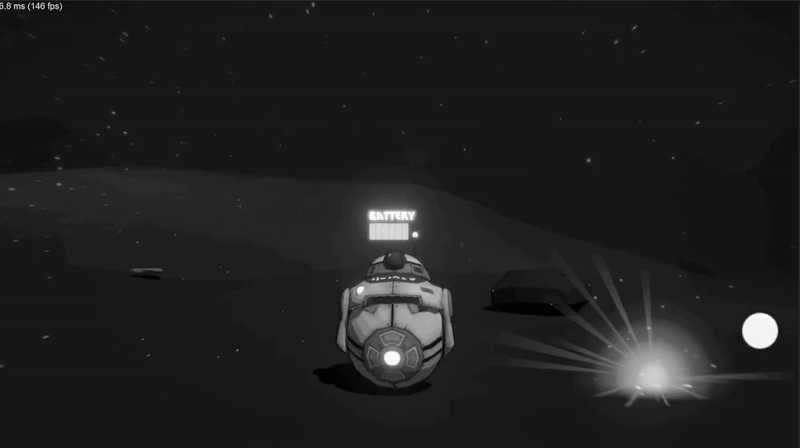
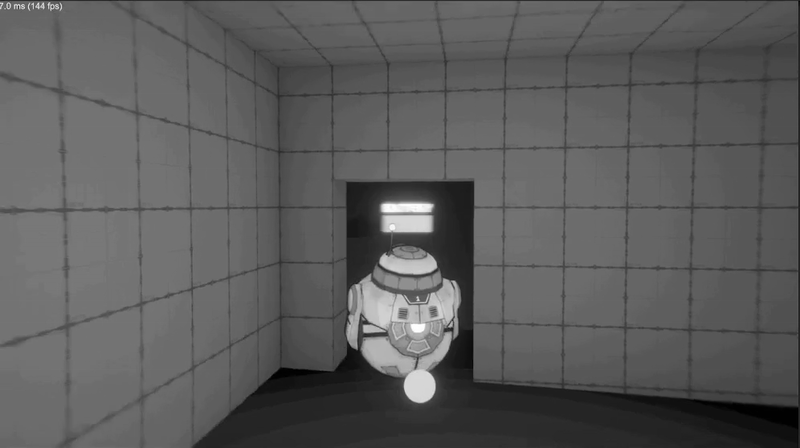

Project Rover
Released
Project Rover is a fun project where a rover collects minerals from different locations across an alien planet. Built in Unity with C# scripting, featuring intuitive controls and engaging gameplay mechanics.


🧠 Features on Graphics
- Stylized cel-shaded lighting with support for normal, metallic, and emissive maps
- PBR-lite surface options including height, occlusion, and transparency
- Basic outline rendering using reverse hull (outline works in Forward rendering mode)
- Real-time and baked lighting support via Ambient Spherical Harmonics
- Highly customizable per material using LWGUI (clean and user-friendly inspector)
🧠 Features on Gameplay Mechanics
- Stylized cel-shaded lighting with support for normal, metallic, and emissive maps
- PBR-lite surface options including height, occlusion, and transparency
- Basic outline rendering using reverse hull (outline works in Forward rendering mode)
- Real-time and baked lighting support via Ambient Spherical Harmonics
- Highly customizable per material using LWGUI (clean and user-friendly inspector)
🧩 Technologies Used
Unity 3D
C#
HLSL
Scriptable Objects
📜 About the Project
This Unity project features a stylized rover scene designed to experiment with cel shading techniques and explore the rendering limits of Unity's Built-in Render Pipeline (BiRP). It uses the Stylized Cel Shader (SCS) by Symmasolan, a PBR-lite shader that supports toon-like shading with outline effects and real-time lighting support.
🎮 Availability
Available as an open-source project on GitHub for developers and Unity enthusiasts.